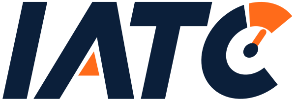

Từ đào tạo kiến thức đến năng lực vận hành: kết quả triển khai thực tế tại Công ty N, từ tháng 6/2026 đến nay.
Từ tháng 6/2026, Học viện ALM đồng hành cùng Công ty N qua ba khóa nối tiếp: khối vận hành nhà máy, đội ngũ quản lý khối văn phòng, rồi toàn bộ nhân sự. Mục tiêu không dừng ở việc biết dùng AI, mà là thay đổi cách làm việc và để lại đội AI Mentor nội bộ.

Học viện ALM · Coaching AI cho doanh nghiệp sản xuấtNhiều doanh nghiệp đã cho nhân sự học AI, nhưng sau khóa học quy trình làm việc vẫn gần như không đổi. Khoảng trống nằm ở bước đi từ biết đến làm.
Nhân sự hiểu AI trên lớp, nhưng không có ai giúp chuyển kiến thức vào đúng công việc của mình.
Không có người kèm cặp sau buổi học, kỹ năng mai một và thói quen cũ quay trở lại.
Doanh nghiệp khó chứng minh lợi ích bằng năng suất, thời gian, chi phí hay tỷ lệ sai sót.
Khóa học kết thúc là hết người dẫn dắt; doanh nghiệp chưa có đội ngũ tự lan tỏa AI nội bộ.
| Tiêu chí | Gói Training AI | Gói Coaching AI |
|---|---|---|
| Mục tiêu | Truyền đạt kiến thức và công cụ | Thay đổi cách làm việc, có sản phẩm đầu ra cụ thể |
| Thời lượng | Một đến hai ngày, diễn ra một lần | Dài hạn theo tháng, nhiều khóa nối tiếp theo từng khối |
| Nội dung | Ví dụ chung, áp dụng cho nhiều ngành | Bài toán thật trong quy trình của chính doanh nghiệp |
| Sản phẩm đầu ra | Kiến thức của từng cá nhân | Quy trình làm việc (SOP) có nhúng AI, dùng hằng ngày |
| Đo lường | Điểm danh, phiếu khảo sát mức độ hài lòng | Thi cuối tháng, phiếu điểm cá nhân, chưa đạt thì làm lại |
| Sau khóa học | Nhân sự tự xoay xở | Đội AI Mentor nội bộ tiếp tục dẫn dắt và lan tỏa |
| Bản chất | Chi phí đào tạo | Đầu tư vào năng lực của tổ chức |
Lợi ích được đo trên chính các quy trình đã nhúng AI, theo bốn chỉ số vận hành, và được giữ lại lâu dài nhờ hai giá trị nền tảng.
Mỗi nhân sự xử lý được nhiều việc hơn với cùng nguồn lực.
Rút ngắn các bước soạn thảo, tổng hợp, tra cứu, báo cáo.
Giảm giờ công cho việc lặp lại và chi phí làm lại.
Quy trình chuẩn hóa có AI kiểm tra, ít phụ thuộc vào trí nhớ cá nhân.
Cách làm tốt được viết thành SOP có AI, không mất đi khi nhân sự thay đổi.
Doanh nghiệp tự đào tạo người mới và tiếp tục cải tiến, hướng tới tổ chức học tập.
Bắt đầu từ lõi sản xuất và đội ngũ quản lý, để khi mở rộng ra toàn công ty đã có quy trình mẫu và người dẫn dắt.
Hiểu đúng AI làm được gì, không làm được gì, và cách giao việc cho AI như giao cho một cộng sự.
Thành thạo hai công cụ chủ lực, dùng được ngay trong công việc hằng ngày.
Đưa AI vào các quy trình làm việc thực tế tại Công ty N.
Đào tạo đội ngũ AI Mentor của Công ty N với năng lực chuyên gia kép:
Phương pháp AI Kaizen: bài học ngắn 10–15 phút, thực hành ngay trên công việc thật, đánh giá định kỳ và kèm cặp đến khi đạt.
Bài AI Kaizen 10–15 phút, giao và nộp bài trực tuyến.
Áp dụng vào nhiệm vụ của chính vị trí công việc.
AI Mentor hỗ trợ theo nhóm, gỡ vướng kịp thời.
Bài thi đánh giá năng lực định kỳ mỗi tháng.
Chấm, nhận xét và xuất phiếu điểm chi tiết cho từng người.
Dưới 7/10 phải làm lại cho đến khi đạt.
Ngưỡng đạt yêu cầu là 7/10. Kết quả được gửi riêng cho từng học viên và tổng hợp cho ban lãnh đạo.
Nhờ cơ chế làm lại bắt buộc, không có học viên nào kết thúc khóa dưới chuẩn.
Mỗi vai trò có nhiệm vụ riêng, để chuyên gia tập trung vào chất lượng chuyên môn, AI Mentor bám sát học viên và Admin giữ nhịp vận hành.
Toàn bộ nhân sự được trang bị bốn bộ tư duy nền tảng khi làm việc cùng AI.
Sử dụng thành thạo hai công cụ AI chính trong công việc hằng ngày.
Khóa K1 và K2 đã có 8 quy trình làm việc nhúng AI, được sử dụng hằng ngày.
Thi cuối mỗi tháng, phiếu điểm cá nhân; chưa đạt 7/10 làm lại đến khi đạt.
Mỗi học viên hoàn thành chương trình với đủ bốn yếu tố để tự ứng dụng AI vào công việc.
Học viện AI Lab Mastery (ALM) và Trung tâm Đào tạo AI Công nghiệp IATC mong được trao đổi thêm về chương trình Coaching AI phù hợp với từng doanh nghiệp.